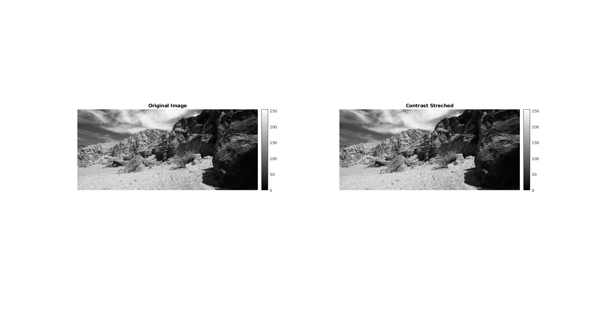

Contents
MyMainScript
tic; myNumOfColors = 256; myColorScale = [ [0:1/(myNumOfColors-1):1]', [0:1/(myNumOfColors-1):1]', [0:1/(myNumOfColors-1):1]'];
Question 2
Part a)
Find a binary mask for the foreground region for image.
A thresholding function with threshold of 0.6*max(Intensity) = 77 was used to create the Binary Mask.
And element wise multiplication of the Original Image with the Bitmask was used to create the Masked image.
% Read Image img = imread('statue.png'); % Masking [bitmask,maskimg] = myForegroundMask(img); % Display figure1 = figure('Position', [0, 0, 5000, 5000]); subplot(1,3,2), imshow(bitmask); colorbar; axis on; title('Bitmask Image'); subplot(1,3,1), imshow(img); colorbar; axis on; title('Original Image'); subplot(1,3,3), imshow(maskimg); colorbar; axis on; title('Masked Image'); sgtitle('Binary Mask and Masked Image');
Part b)
Linear Contrast Stretching
im_1=imread("barbara.png"); im_2=imread("TEM.png"); im_3=imread("canyon.png"); im_3=rgb2gray(im_3); im_5=imread("church.png"); im_5=rgb2gray(im_5); im_6=imread("chestXray.png"); im_7=imread("bitmask.png"); im_7=rgb2gray(im_7); im_8=imread("masked.png"); im_8=rgb2gray(im_8); Fim_1=myLinearContrastStretching(im_1); Fim_2=myLinearContrastStretching(im_2); Fim_3=myLinearContrastStretching(im_3); Fim_5=myLinearContrastStretching(im_5); Fim_6=myLinearContrastStretching(im_6); Fim_7=myLinearContrastStretching(im_7); Fim_8=myLinearContrastStretching(im_8); figure2 = figure('Position', [0, 0, 5000, 5000]); subplot(1,2,1),imshow(im_1) title('Original Image') colorbar subplot(1,2,2),imshow(Fim_1) title('Contrast Streched') colorbar figure3 = figure('Position', [0, 0, 5000, 5000]); subplot(1,2,1),imshow(im_2) title('Original Image') colorbar subplot(1,2,2),imshow(Fim_2) title('Contrast Streched') colorbar figure4 = figure('Position', [0, 0, 5000, 5000]); subplot(1,2,1),imshow(im_3) title('Original Image') colorbar subplot(1,2,2),imshow(Fim_3) title('Contrast Streched') colorbar figure5 = figure('Position', [0, 0, 5000, 5000]); subplot(1,2,1),imshow(im_5) title('Original Image') colorbar subplot(1,2,2),imshow(Fim_5) title('Contrast Streched') colorbar figure6 = figure('Position', [0, 0, 5000, 5000]); subplot(1,2,1),imshow(im_6) title('Original Image') colorbar subplot(1,2,2),imshow(Fim_6) title('Contrast Streched') colorbar figure7 = figure('Position', [0, 0, 5000, 5000]); subplot(1,2,1),imshow(im_7) title('Original Image') colorbar subplot(1,2,2),imshow(Fim_7) title('Contrast Streched') colorbar figure8 = figure('Position', [0, 0, 5000, 5000]); subplot(1,2,1),imshow(im_8) title('Original Image') colorbar subplot(1,2,2),imshow(Fim_8) title('Contrast Streched') colorbar
Conclusion
Formula for Linear Contrast Stretching function T(x,y)= m*R(x,y), where m=255/max intensity of original image After contrast stretching image 5 ('church'), there's no change in the original image. Because maximum intensity of that image is 255, so the transformation function becomes identity for this image.
Part c)
Histogram Equalization
i1= "barbara.png"; i2= "TEM.png"; i3= "canyon.png"; i4= "retina.png"; i5= "church.png"; i6= "chestXray.png"; i7="statue.png"; image1 = myHE(i1); image2 = myHE(i2); image3 = myHE(i3); image5 = myHE(i5); image6 = myHE(i6); figure9 = figure('Position', [0, 0, 5000, 5000]); subplot(1,5,1),imshow(image1); colorbar; axis on; title("barbara.png HE"); subplot(1,5,2),imshow(image2); colorbar; axis on; title("TEM.png HE"); subplot(1,5,3),imshow(image3); colorbar; axis on; title("canyon.png HE"); subplot(1,5,4),imshow(image5); colorbar; axis on; title("church.png HE"); subplot(1,5,5),imshow(image6); colorbar; axis on; title("chest xray.png HE")
Part d)
Performing Histogram Matching
% Read images img = imread('retina.png'); imgmask = imread('retinaMask.png'); ref = imread('retinaRef.png'); refmask = imread('retinaRefMask.png'); [eqlimg,matimg] = myHM(img,imgmask,ref,refmask); % Display figure10=figure('Position', [0, 0, 5000, 5000]); colormap(jet(myNumOfColors)); subplot(2,4,1), imshow(img); title('Original Image'); colorbar; axis on; subplot(2,4,5), imhist(img); subplot(2,4,2), imshow(eqlimg); title('Histogram Equalized Image'); colorbar; axis on; subplot(2,4,6), imhist(eqlimg); subplot(2,4,3), imshow(matimg); title('Histogram Matched Image'); colorbar; axis on; subplot(2,4,7), imhist(matimg); subplot(2,4,4), imshow(ref); title('Reference Image'); colorbar; axis on; subplot(2,4,8), imhist(ref); sgtitle('Histogram Matching Results');
Conclusion
The histogram of the Original Image has been matched with that of the Reference Image and in the process has also been equalized.
All the operations have been performed individually for each color channel.
Part e)
Contrast-Limited Adaptive Histrogram Equalization(CLAHE)
I1 = myCLAHE(i1,60,0.4); I1_larger_ws = myCLAHE(i1,300,0.4); I1_smaller_ws = myCLAHE(i1,5,0.4); I1_half_alpha = myCLAHE(i1,60,0.2); figure11=figure('Position', [0, 0, 5000, 5000]); subplot(1,4,1),imshow(I1); title("barbara ClAHE"); subplot(1,4,2),imshow(I1_larger_ws); title("barbara low contrast CLAHE"); subplot(1,4,3),imshow(I1_smaller_ws); title("barbara excessive noise ClAHE"); subplot(1,4,4),imshow(I1_half_alpha); title("barbara half_alpha CLAHE"); I2 = myCLAHE(i2,120,0.5); I2_larger_ws = myCLAHE(i2,500,0.5); I2_smaller_ws = myCLAHE(i2,10,0.5); I2_half_alpha = myCLAHE(i2,120,0.25); figure12=figure('Position', [0, 0, 5000, 5000]); subplot(1,4,1),imshow(I2); title("TEM ClAHE"); subplot(1,4,2),imshow(I2_larger_ws); title("TEM low contrast CLAHE"); subplot(1,4,3),imshow(I2_smaller_ws); title("TEM excessive noise ClAHE"); subplot(1,4,4),imshow(I2_half_alpha); title("TEM half_alpha CLAHE"); I3 = myCLAHE(i3,50,0.1); I3_larger_ws = myCLAHE(i3,200,0.1); I3_smaller_ws = myCLAHE(i3,5,0.1); I3_half_alpha = myCLAHE(i3,50,0.05); figure13=figure('Position', [0, 0, 5000, 5000]); subplot(1,4,1),imshow(I3); title("canyon ClAHE"); subplot(1,4,2),imshow(I3_larger_ws); title("canyon low contrast CLAHE"); subplot(1,4,3),imshow(I3_smaller_ws); title("canyon excessive noise ClAHE"); subplot(1,4,4),imshow(I3_half_alpha); title("canyon half_alpha CLAHE"); I6 = myCLAHE(i6,100,0.5); I6_larger_ws = myCLAHE(i6,500,0.5); I6_smaller_ws = myCLAHE(i6,10,0.5); I6_half_alpha = myCLAHE(i6,100,0.25); figure14=figure('Position', [0, 0, 5000, 5000]); subplot(1,4,1),imshow(I6); title("chest xray ClAHE"); subplot(1,4,2),imshow(I6_larger_ws); title("chest xray low contrast CLAHE"); subplot(1,4,3),imshow(I6_smaller_ws); title("chest xray excessive noise ClAHE"); subplot(1,4,4),imshow(I6_half_alpha); title("chest xray half_alpha CLAHE");
toc;
Elapsed time is 544.857233 seconds.